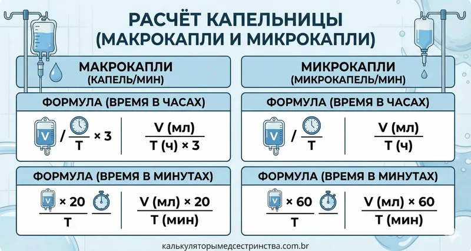

Быстро и точно рассчитайте скорость капельницы для макрокапель и микрокапель.
Заполните поля ниже, чтобы рассчитать скорость инфузии:
Формулы расчета
Время в ЧАСАХ:
-
Капли/мин = Объем (мл) ÷ (Время (ч) × 3)
-
Микрокапли/мин = Объем (мл) ÷ Время (ч)
Время в МИНУТАХ:
-
Капли/мин = (Объем (мл) × 20) ÷ Время (мин)
-
Микрокапли/мин = (Объем (мл) × 60) ÷ Время (мин)

Ссылка:
Gatford, J. D., & Phillips, N. M. (2016). Nursing Calculations. 9th ed. Elsevier Health Sciences.